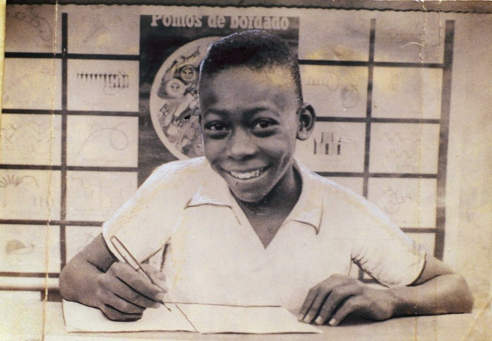
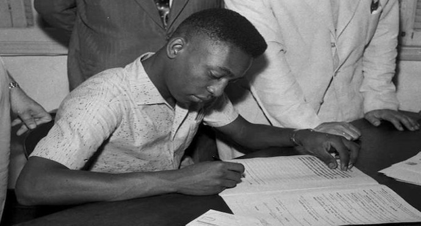

Vida e história do Pelé
A Origem

Edson Arantes do Nascimento, conhecido como Pelé, nasceu na cidade de
Três Corações, em Minas Gerais, no dia 23 de outubro de 1940. Filho de
João Ramos do Nascimento (Dondinho), também jogador de futebol, e de
Celeste Arantes. Desde pequeno Pelé gostava de futebol e jogava com
uma bola de pano. Em 1944 mudou-se com a família para a cidade de
Bauru, em São Paulo.
Santos Futebol Clube

Ainda em 1956, Pelé foi levado para treinar no Santos F.C. pelo também
jogador Waldemar de Brito. Em jogo treino, Pelé fez quatro gols,
quando seu time ganhou de 6 a 1. Sua primeira partida oficial foi no
dia 7 de setembro de 1956, em um jogo amistoso entre Santos e
Corinthians. O resultado foi de 7 a 1 para o Santos, com dois gols de
Pelé. Na contagem de 1000 gols da carreira, estes foram os primeiros
oficializados. Pelé levou o Santos a conquistar muitos títulos. Em
1974 fez o seu último jogo com a camisa do Santos.